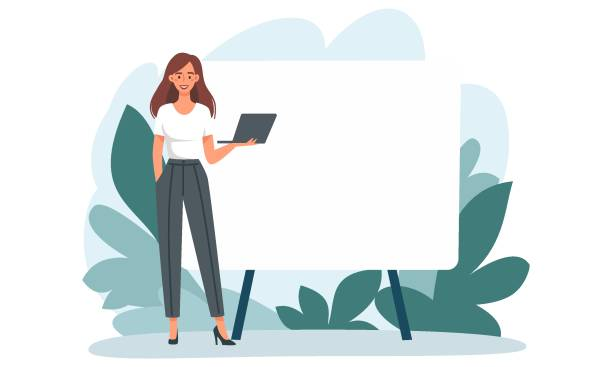
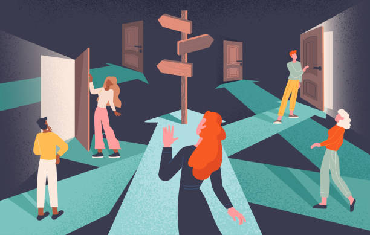

Bienvenue
Bonjour et bienvenue sur mon site,
Je suis ravi de pouvoir enfin rassembler tous mes projets et les présenter au même endroit.
Ce site web fait partie des nombreux projets que j'ai réalisés.
|  |
PresentationSalut, moi c'est Whixon !
J'ai commencé à apprendre la programmation avec Scratch (langage Blocky),
|
|---|
Pourquoi ce blog ?
J’adore développer des applications, des outils qui simplifient la vie, mais aussi des petits jeux.
|

|
|---|
|  |
Ce que tu vas trouver ici
|
|---|
Un blog interactif
Ce blog n’est pas juste un endroit où je poste mes créations, c’est aussi un espace d’échanges.
|
|---|